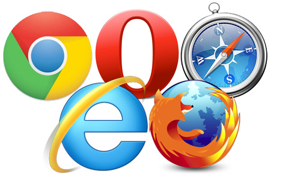

Um navegador é um programa que habilita seus usuários a interagirem com documentos HTML hospedados em um servidor Web.Também conhecido como browser, o navegador é um dos principais softwares de um computador, ainda mais nessa era de Web 2.0, onde quase tudo o que precisamos está online.
Tim Berners-Lee, que foi um dos pioneiros no uso do hipertexto como forma de compartilhar informações, criou o primeiro navegador, chamado WorldWideWeb (www), em 1990. Mais tarde, para não confundir-se com a própria rede, trocou de nome para Nexus.
A Web, entretanto, só explodiu realmente em popularidade com a introdução do NCSA 'Mosaic, que era um navegador gráfico (em oposição a navegadores de modo texto) rodando originalmente no Unix, mas que foi também portado para o Macintosh e Microsoft Windows logo depois. A versão 1.0 foi liberada em Setembro de 1993. Marc Andreesen, o líder do projeto Mosaic na NCSA, demitiu-se para formar a companhia que seria conhecida mais tarde como 'Netscape Communications Corporation.